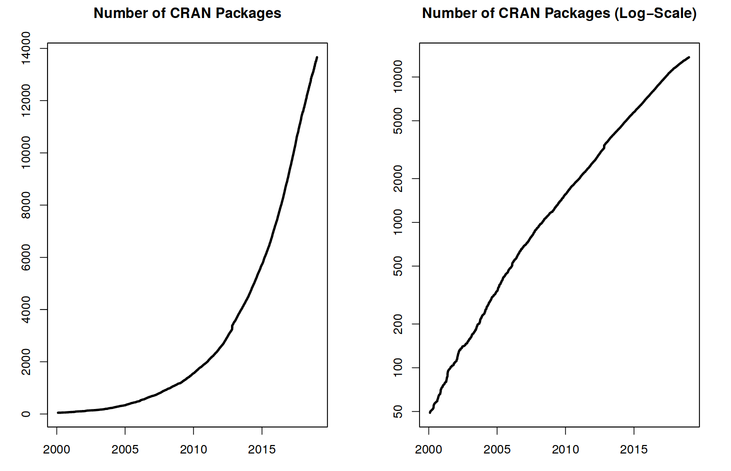
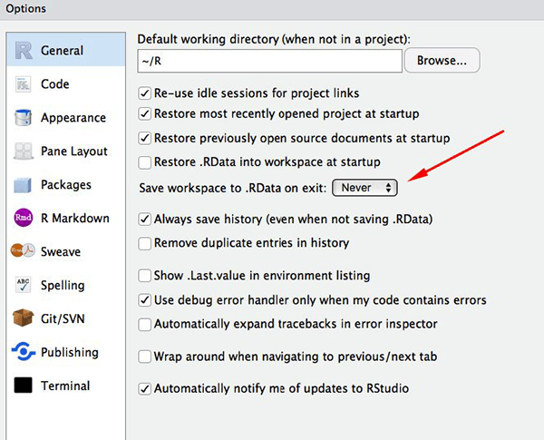
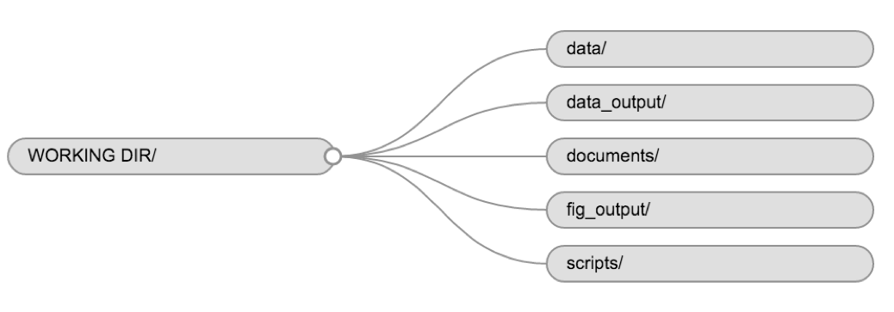
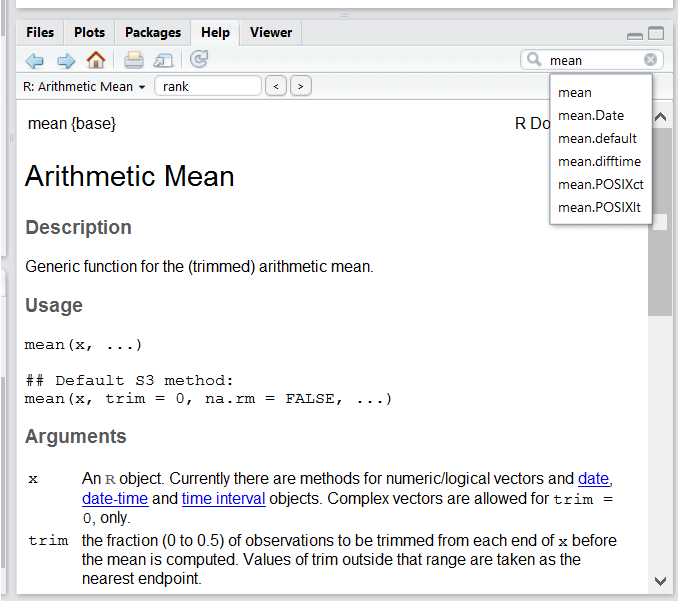

RとRStudio
最終更新日：2026-11-07 | ページの編集
概要
質問
- RとRStudioとは何ですか？
目的
- RStudioのスクリプト、コンソール、環境、プロットの各ペインの目的について説明してください。
- 一連の解析のためのファイルとディレクトリをRプロジェクトとして整理し、作業ディレクトリの目的を理解します。
- Rの関数に関する詳細情報を調べるには、RStudio内蔵のヘルプインターフェースをご利用ください。
- Rユーザーコミュニティでトラブルシューティングを行う際に、十分な情報を提供する方法を説明します。
このエピソードは、Data Carpentriesの「生態学者のためのRによるデータ分析と可視化」レッスンに基づいています。
Rとは何ですか？RStudioとは何ですか？
Rという用語は、プログラミング言語、統計計算環境、およびそれを用いて記述されたスクリプトを解釈するソフトウェアを指して用いられます。
RStudioは現在、Rスクリプトを記述するだけでなく、Rソフトウェアを操作するためにも非常に広く利用されているツールです1。正常に動作させるにはRが必要であるため、お使いのコンピュータにRとRStudioの両方がインストールされている必要があります。
RStudio IDEチートシートには、ここで扱う内容よりもはるかに多くの情報が記載されていますが、キーボードショートカットを覚えたり、新機能を発見したりするのに役立ちます。
なぜRを学ぶのでしょうか？
Rはあちこちを指し示したりクリックしたりすることがあまりありません。それは良いことです。
他のソフトウェアに比べて習得までのハードルは高いかもしれませんが、Rでは分析結果が一連のポインティング＆クリック操作の記憶に依存せず、一連の記述式コマンドに基づいて得られるという点は大きなメリットです。そのため、さらにデータを収集して分析をやり直したい場合でも、結果を得るためにどのボタンをどの順番でクリックしたかを思い出す必要はありません。単にスクリプトを再実行すればよいのです。
スクリプトを活用することで、分析で用いた手順が明確になります。また、記述したコードを他の人が確認し、フィードバックをくれたりミスを見つけたりすることも可能です。
スクリプトを活用することで、自身の作業に対する理解を深めることができ、使用する手法の習得や理解も容易になります。
Rコードは再現性に優れています。
再現性とは、同じ解析コードを用いれば、他の誰か（将来の自分を含む）が同じデータセットから同じ結果を得られることを意味します。
Rは他のツールと連携し、コードから原稿やレポートを作成できます。さらにデータを収集したり、データセットの誤りを修正したりすると、原稿やレポート内の図や統計検定が自動的に更新されます。
再現性のある解析を求める学術誌や助成機関が増えており、Rを習得していれば、こうした要件への対応において優位に立つことができます。
Rは学際的で拡張性に優れています。
機能を拡張するためにインストール可能な10,000以上のパッケージ2を備えたRは、多くの科学分野の統計的手法を組み合わせ、データ解析に必要な分析フレームワークに最適に適合させることができる枠組みを提供しています。例えば、Rには画像解析、GIS、時系列解析、集団遺伝学など、多岐にわたるパッケージが用意されています。

Rはあらゆる形式や規模のデータを扱えます。
Rで習得するスキルは、データセットの規模に応じて容易に応用できます。データセットが数百行であっても数百万行であっても、それほど大きな違いはありません。
Rはデータ分析向けに設計されています。欠損データや統計的因子の取り扱いを容易にする、専用のデータ構造やデータ型を備えています。
Rは、お使いのコンピュータ上やウェブ上のスプレッドシート、データベース、その他多くのデータ形式に接続できます。
Rには大規模で親しみやすいコミュニティがあります。
毎日、数千人もの人々がRを利用しています。その多くは、メーリングリストやStack Overflowなどのウェブサイト、あるいはRStudioコミュニティを通じて、快くサポートしてくれます。こうした広範なユーザーコミュニティは、バイオインフォマティクスなどの専門分野にも及んでいます。Rコミュニティのこうした一部を構成するのがBioconductorであり、これは「現在および新興の生物学的アッセイによるデータ」の解析と理解を目的とした科学プロジェクトです。本ワークショップはBioconductorコミュニティのメンバーによって開発されました。Bioconductorの詳細については、関連ワークショップである“The Bioconductor Project”をご覧ください。
RStudioの基本操作
まずは、Rを扱うための統合開発環境（IDE）であるRStudioについて学んでいきましょう。
オープンソース製品であるRStudio IDEは、Affero General Public License (AGPL) v3に基づき無料で提供されています。また、RStudio IDEはPosit, Inc.から商用ライセンスおよび優先メールサポート付きで提供されています。
コードの記述、コンピュータ上のファイルの操作、作成予定の変数の確認、および生成するプロットの可視化には、RStudio IDEを使用します。RStudioは、本ワークショップでは扱わない他の用途（例：バージョン管理、パッケージ開発、Shinyアプリの作成）にも利用できます。

RStudioのウィンドウは4つの「ペイン」に分かれています。
- スクリプトやドキュメントのソース（デフォルトレイアウトでは左上）
- 環境/履歴（右上）、
- Files/Plots/Packages/Help/Viewer（右下）、および
- Rのコンソール（左下）。
これらのペインの配置や内容はカスタマイズ可能です（メニューのTools -> Global Options -> Pane Layoutを参照してください）。
RStudioを利用するメリットの一つは、コードを記述するために必要なすべての情報が一つのウィンドウで確認できる点です。さらに、Rでの開発で使用する主要なファイル形式に対する多くのショートカット、自動補完、ハイライト機能により、RStudioを使えばより簡単に、かつミスの少ない入力が可能になります。
セットアップ
関連するデータ、解析、テキストを、作業ディレクトリと呼ばれる単一のフォルダにまとめて管理するのが一般的です。このフォルダ内のすべてのスクリプトでは、プロジェクト内のどこにファイルがあるかを示す相対パスを使用できます（特定のコンピュータ上の場所を指す絶対パスとは異なります）。このように管理することで、基盤となるスクリプトが引き続き動作するかどうかを心配することなく、コンピュータ上でプロジェクトを移動させたり、他者と共有したりすることが格段に容易になります。
RStudioでは、「プロジェクト」インターフェースを通じてこれを実現するための便利なツール群が提供されています。この機能は、作業ディレクトリを作成するだけでなく、その場所を記憶し（これにより素早く移動できます）、オプションでカスタム設定や開いているファイルを保持することで、中断後の作業再開を容易にします。以下の手順に従って、このチュートリアル用の「Rプロジェクト」を作成してください。
- RStudioを起動します。
-
Fileメニューから、New projectをクリックしてください。New directoryを選択し、次にNew projectを選択してください。 - この新しいフォルダ（または「ディレクトリ」）に名前を入力し、適切な場所を指定してください。これが今回のセッション（またはコース全体）の作業ディレクトリとなります（例：
bioc-intro）。 -
Create projectをクリックしてください。 - （任意）RStudioの環境設定で、ワークスペースを保存しないよう「Never」に設定してください。
RStudioのデフォルト設定は概ね問題なく動作しますが、特に大規模なデータセットを扱う場合、ワークスペースを.RDataに保存するのは手間がかかることがあります。この機能を無効にするには、「ツール」→「グローバルオプション」に進み、「終了時にワークスペースを.RDataに保存」のオプションで「なし」を選択してください。

Windowsと他のOS間の文字エンコーディングの問題を避けるため、デフォルトでUTF-8を設定します。

作業ディレクトリの整理
プロジェクト間で一貫したフォルダ構成を採用することで、整理された状態を維持でき、将来的にファイルの検索や整理も容易になります。これは、複数のプロジェクトを抱えている場合に特に有用です。一般的には、スクリプト、データ、ドキュメント用のディレクトリ（フォルダ）を作成するとよいでしょう。
-
data/このフォルダを、生データや、特定の解析のために作成する中間データセットの保存先に使用してください。透明性と来歴を確保するため、生データのコピーは常に参照可能な状態で保持し、データのクリーニングや前処理は可能な限りプログラム的に（つまり、手動ではなくスクリプトを用いて）行うようにしてください。また、生データと処理済みデータを分離しておくことも推奨されます。例えば、scripts/01.preprocess.tree_survey.Rスクリプトによって生成されたdata/processed/tree.survey.csvファイルとは別に、data/raw/tree_survey.plot1.txtや...plot2.txtといったファイルを保持するといった方法が考えられます。 -
documents/ここには、アウトラインや下書き、その他のテキストを保存します。 -
scripts/（またはsrc） ここには、各種解析やプロット用のRスクリプトを保存し、場合によっては関数用の別フォルダを設けることになります（これについては後述します）。
プロジェクトのニーズに応じて、追加のディレクトリやサブディレクトリが必要になる場合もありますが、これらが作業ディレクトリの骨格となるべきです。

本コースでは、生データを保存するためのdata/フォルダが必要になります。また、データをCSVファイルとしてエクスポートする方法を学ぶ際にはdata_output/を、保存する図にはfig_output/フォルダを使用します。
課題：プロジェクトのディレクトリ構成を作成してください。
画面右側のFilesタブでNew Folderをクリックし、新しく作成した作業ディレクトリ（例：~/bioc-intro/data）内にdataという名前のフォルダを作成してください。（または、Rコンソールでdir.create("data")と入力してください。）これらの操作を繰り返し、data_output/とfig_outputのフォルダを作成してください。
使用するファイルは1つだけですし、その方が手間がかからないため、スクリプトは作業ディレクトリのルートに配置しておきます。
作業ディレクトリは、現在以下のようになっているはずです。

プロジェクト管理は、もちろんバイオインフォマティクスのプロジェクトにも適用可能です3。William Noble ( Noble (2009) ) は、次のようなディレクトリ構成を提案しています。
ディレクトリ名は大きめの書体で、ファイル名は小さめの書体で表記されています。ここではファイルの一部のみが表示されています。なお、日付は時系列順に並べ替えられるよう
<year>-<month>-<day>形式で表記されています。ソースコードsrc/ms-analysis.cはコンパイルされてbin/ms-analysisが生成され、doc/ms-analysis.htmlにドキュメントが記載されています。データディレクトリ内のREADMEファイルには、誰が、どのURLから、どの日付にデータファイルをダウンロードしたかが指定されています。ドライバスクリプトresults/2009-01-15/runallは、3つの交差検証分割に対応する3つのサブディレクトリ（split1、split2、split3）を自動的に生成します。bin/parse-sqt.pyスクリプトは、両方のrunallドライバスクリプトから呼び出されます。

適切に定義され、十分に文書化されたプロジェクトディレクトリにおいて最も重要な点は、プロジェクトに不慣れな人4が
プロジェクトの内容、利用可能なデータ、実施された解析、および得られた結果を理解し、そして何よりも重要なのが
分析を再度実施します ― 新しいデータを用いるか、あるいは分析パラメータの一部を変更して行います。
作業ディレクトリ
作業ディレクトリは、理解しておくべき重要な概念です。これは、Rがファイルを探し、保存する場所のことです。プロジェクトのコードを記述する際は、作業ディレクトリのルートを基準としてファイルを参照し、この構造内にあるファイルのみを使用するようにしてください。
RStudioのプロジェクトを利用すれば、この操作は簡単になり、作業ディレクトリも適切に設定されます。確認が必要な場合は、getwd()を使用できます。何らかの理由で作業ディレクトリが意図した状態になっていない場合は、RStudioのインターフェースで、作業ディレクトリがあるべき場所のファイルブラウザに移動し、青い歯車アイコンMoreをクリックしてSet As Working Directoryを選択することで、変更できます。あるいは、setwd("/path/to/working/directory")を使用して作業ディレクトリをリセットすることも可能です。ただし、この行をスクリプトに含めないでください。他の人のコンピュータでは動作しなくなるためです。
例
以下のスキーマは、dataおよびfig_outputというサブディレクトリを持つ作業ディレクトリbioc-introと、後者にある2つのファイルを表しています。
bioc-intro/data/
/fig_output/fig1.pdf
/fig_output/fig2.png作業ディレクトリにいる場合は、相対パス
bioc-intro/fig_output/fig1.pdf または絶対パス
/home/user/bioc-intro/fig_output/fig1.pdf を用いて
fig1.pdf ファイルを参照できます。
dataディレクトリにいる場合は、相対パス../fig_output/fig1.pdfまたは同じ絶対パス/home/user/bioc-intro/fig_output/fig1.pdfを使用します。
Rの操作
プログラミングの基本は、コンピュータが従うべき指示を書き出し、その指示に従うようコンピュータに指示することです。Rで指示を書き出す、つまりコードを書くのは、Rがコンピュータと人間の双方が理解できる共通言語だからです。これらの指示をコマンドと呼び、それらのコマンドを実行（ランとも呼びます）することで、コンピュータにその指示に従わせます。
Rを操作する方法には、主にコンソールを使う方法と、スクリプト（コードを記述したプレーンテキストファイル）を使う方法の2通りがあります。コンソールペイン（RStudioでは左下のパネル）は、R言語で記述したコマンドを入力し、コンピュータで即座に実行できる場所です。また、実行したコマンドの結果が表示される場所でもあります。コンソールに直接コマンドを入力してEnterを押すことで実行できますが、セッションを閉じるとそれらの内容は消えてしまいます。
コードとワークフローの再現性を確保するためには、実行したいコマンドをスクリプトエディタに入力し、スクリプトを保存しておくのが得策です。そうすることで、行った操作の完全な記録が残り、誰でも（将来の自分も含めて！）自分のコンピュータで簡単に結果を再現できるようになります。ただし、単にスクリプトにコマンドを入力しただけでは、自動的に実行されるわけではない点に注意してください。実行するには、依然としてコンソールに送信する必要があります。
RStudioでは、Ctrl + Enter
のショートカットを使用して、スクリプトエディタから直接コマンドを実行できます（Macでは
Cmd + Return
でも動作します）。Ctrl + Enter
を押すと、スクリプトの現在の行（カーソルで示されている行）にあるコマンド、または現在選択されているテキスト内のすべてのコマンドがコンソールに送信され、実行されます。その他のキーボードショートカットについては、こちらのRStudio
IDEに関するRStudioチートシートをご覧ください。
解析の途中で、スクリプトに必ずしも記録を残すことなく、変数の中身やオブジェクトの構造を確認したい場合があります。これらのコマンドは、コンソールで直接入力して実行できます。RStudioでは、Ctrl
+ 1 および Ctrl + 2
というショートカットを使用して、スクリプトとコンソールペインの間を切り替えることができます。
Rがコマンドを受け付けられる状態になると、Rコンソールに>プロンプトが表示されます。コマンド（入力、コピー＆ペースト、またはスクリプトエディタからCtrl
+
Enterを使用して送信）を受け取ると、Rはその実行を試み、準備が整い次第、結果を表示して新しい>プロンプトに戻り、次のコマンドを待機します。
Rがまだ完了しておらず、さらなるデータの入力を待っている状態の場合、コンソールに+というプロンプトが表示されます。これは、完全なコマンドの入力が完了していないことを意味します。これは、括弧や引用符を「閉じて」いない、つまり左括弧の数と右括弧の数、あるいは引用符の開きと閉じの数が一致していないためです。このような状態で、コマンドの入力が完了したと思った場合は、コンソールウィンドウ内をクリックしてEscを押してください。これにより、未完了のコマンドがキャンセルされ、>プロンプトに戻ります。
コース期間中および終了後に、さらに詳しく学ぶにはどうすればよいでしょうか？
本コースで扱う内容を通じて、ご自身の研究のためにRを用いてデータを分析する方法の基礎に触れていただけます。ただし、データセットのクリーニングや統計手法の活用、あるいは見栄えの良いグラフの作成といった高度な操作を行うには、さらなる学習が必要です5。他のツールと同様に、Rに習熟し効率的に使いこなせるようになる最善の方法は、実際の研究課題に取り組むために活用することです。初心者の方にとって、スクリプトを一から書くのは気が遠くなるように感じられるかもしれません。また、多くの人がコードをオンラインで公開しているため、既存のコードを目的に合わせて修正して利用する方が、よりスムーズに学習を始められるでしょう。

ヘルプの参照
RStudio内蔵のヘルプインターフェースを使用して、R関数に関する詳細情報を検索してください。

ヘルプを得る最も迅速な方法の一つは、RStudioのヘルプインターフェースを利用することです。このパネルはデフォルトでRStudioの右下に配置されています。スクリーンショットにあるように、「Mean」という単語を入力すると、RStudioは関心を持ちそうな候補をいくつか提示しようとします。その後、その説明が表示ウィンドウに表示されます。
使いたい関数の名前は分かっているのですが、使い方が分かりません。
特定の関数（例えば
barplot()）についてヘルプが必要な場合は、次のように入力してください。
R
?barplot
引数の名前を再確認したいだけであれば、以下をご利用いただけます。
R
args(lm)
Xという処理を行う関数を使いたいのですが、きっとそういう関数があるはずなのに、どれなのか分かりません……。
特定の処理を行う関数をお探しの場合は、ダブルクエスチョンマーク
?? で呼び出す help.search()
関数をご利用いただけます。ただし、この関数はインストール済みパッケージの中から、検索内容に一致するヘルプページを検索するだけです。
R
??kruskal
お探しの情報が見つからない場合は、利用可能なすべてのパッケージのヘルプファイルを検索できる rdocumentation.org のウェブサイトをご利用ください。
最後に、Googleやインターネットで「R <task>」と汎用的に検索すれば、多くの場合、適切なパッケージのドキュメントや、すでに誰かが同じ質問をしている役立つフォーラムに辿り着くでしょう。
行き詰まってしまいました… 意味のわからないエラーメッセージが表示されます。
まずはエラーメッセージをGoogleで検索してみましょう。ただし、パッケージ開発者はRが提供するエラー処理機能を利用していることが多いため、必ずしもうまく機能するとは限りません。結果として、問題の診断にあまり役立たない一般的なエラーメッセージ（例：「subscript out of bounds」）が表示されることがあります。メッセージが非常に汎用的な場合は、使用している関数やパッケージの名前も検索クエリに含めてみてください。
ただし、Stack
Overflowも確認してみてください。[r]タグを使って検索してください。ほとんどの質問にはすでに回答が付いていますが、検索時に適切な言葉を選んで答えを見つけ出すのがポイントです：
https://stackoverflow.com/questions/tagged/r
R入門は、プログラミング経験が少ない方には内容が難解に感じられることもありますが、R言語の基礎を理解するには最適な教材です。
R FAQは内容が濃密で専門的ですが、有用な情報が満載です。
助けを求める
誰かに助けてもらうための鍵は、相手に問題を迅速に把握してもらうことです。問題がどこにあるのかをできるだけ簡単に特定できるようにしてください。
問題を説明する際は、適切な言葉を使うようにしてください。例えば、「パッケージ」と「ライブラリ」は別物です。ほとんどの人は意図を理解してくれるでしょうが、この意味の違いに強いこだわりを持つ人もいます。重要なのは、助けようとしている人を混乱させてしまう可能性があるということです。問題を説明する際は、可能な限り正確に記述してください。
可能であれば、うまくいかない箇所をシンプルな再現可能な例に絞り込んでください。50,000行10,000列のデータフレームではなく、ごく小規模なデータフレームで問題を再現できる場合は、その小規模なデータと問題の説明を添えてください。適宜、ご自身の分野外の人でも質問内容を理解できるよう、記述を一般化するよう心がけてください。例えば、実際のデータセットのサブセットを使うのではなく、小規模な（3列5行の）汎用的なデータセットを作成してください。再現可能な例の書き方の詳細については、Hadley Wickham氏によるこちらの記事を参照してください。
オブジェクトを他の人と共有する場合、サイズが比較的小さければ、dput()関数を使用できます。これにより、メモリ上のものと全く同じオブジェクトを再現できるRコードが出力されます。
R
## iris is an example data frame that comes with R and head() is a
## function that returns the first part of the data frame
dput(head(iris))
出力
structure(list(Sepal.Length = c(5.1, 4.9, 4.7, 4.6, 5, 5.4),
Sepal.Width = c(3.5, 3, 3.2, 3.1, 3.6, 3.9), Petal.Length = c(1.4,
1.4, 1.3, 1.5, 1.4, 1.7), Petal.Width = c(0.2, 0.2, 0.2,
0.2, 0.2, 0.4), Species = structure(c(1L, 1L, 1L, 1L, 1L,
1L), levels = c("setosa", "versicolor", "virginica"), class = "factor")), row.names = c(NA,
6L), class = "data.frame")オブジェクトのサイズが大きい場合は、生ファイル（つまりCSVファイル）と、エラーが発生する箇所までのスクリプト（問題に関係のない部分はすべて削除したもの）を併せて提供してください。あるいは、特に質問内容がデータフレームに関連していない場合は、任意のRオブジェクトをファイル[^export]に保存することも可能です：
R
saveRDS(iris, file="/tmp/iris.rds")
ただし、このファイルの内容は人間が読める形式ではないため、Stack
Overflowに直接投稿することはできません。代わりに、readRDS()コマンドで閲覧可能な相手にメールで送信することができます（ここでは、ダウンロードしたファイルがユーザーのホームディレクトリ内のDownloadsフォルダにあることを前提としています）：
R
some_data <- readRDS(file="~/Downloads/iris.rds")
最後になりますが、同様に重要な点として、必ずsessionInfo()の出力結果を記載してください。そこにはお使いのプラットフォームやRおよびパッケージのバージョン、その他問題の把握に非常に役立つ情報が含まれているためです。
R
sessionInfo()
出力
R version 4.6.2 (2026-10-29)
Platform: aarch64-apple-darwin23
Running under: macOS Golden Gate 27.2
Matrix products: default
BLAS: /Library/Frameworks/R.framework/Versions/4.6/Resources/lib/libRblas.0.dylib
LAPACK: /Library/Frameworks/R.framework/Versions/4.6/Resources/lib/libRlapack.dylib; LAPACK version 3.12.1
locale:
[1] C.UTF-8/C.UTF-8/C.UTF-8/C/C.UTF-8/C.UTF-8
time zone: Asia/Tokyo
tzcode source: internal
attached base packages:
[1] stats graphics grDevices utils datasets methods base
loaded via a namespace (and not attached):
[1] compiler_4.6.2 cli_3.6.6 tools_4.6.2 otel_0.2.0 knitr_1.52
[6] xfun_0.62 rlang_1.3.0 png_0.1-9 evaluate_1.0.5どこで助けを求めればよいでしょうか？
- コース中に隣に座っている方です。ワークショップ中は、遠慮なく隣の方と話をしたり、解答を照らし合わせたり、助けを求めたりしてください。
- 親切な仲間：自分より経験豊富な知り合いがいれば、快く助けてくれるかもしれません。
- Stack Overflow：質問にまだ回答がなく、かつ適切に構成されていれば、5分以内に回答が得られる可能性が高いです。良い質問の仕方に関するガイドラインに従うようにしてください。
- R-helpメーリングリスト：非常に多くの人が閲覧しており（Rコアチームの大半も含まれます）、投稿数も多いですが、口調がかなり堅苦しく、新規ユーザーを必ずしも温かく迎えてくれるとは限りません。質問内容が適切であれば、おそらく非常に早く回答が得られるでしょうが、絵文字付きの返信を期待しないでください。また、こここそ他のどこよりも、正しい用語を使うよう心がけてください（そうしないと、質問に答えるのではなく、言葉の誤用を指摘する回答が返ってくる可能性があります）。さらに、特定のパッケージではなくbase関数に関する質問の方が、よりうまく回答を得られるでしょう。
- 特定のパッケージに関する質問の場合は、そのパッケージのメーリングリストがないか確認してください。通常、
packageDescription("name-of-package")でアクセスできるパッケージの DESCRIPTION ファイルに記載されています。また、パッケージの作者に直接メールを送るか、コードリポジトリ（例：GitHub）で issue を起票してみるのもよいでしょう。 - また、特定のトピックに特化したメーリングリスト（GIS、系統学など）もあり、全リストはR-projectのメーリングリストページでご確認いただけます。
Rパッケージ
パッケージの読み込み
前述の通り、RではRパッケージが極めて重要な役割を果たします。パッケージがインストールされていることを前提として、その機能を利用するには、まずパッケージをロードする必要があります。これはlibrary()関数を用いて行います。以下では、ggplot2をロードします。
R
library("ggplot2")
パッケージのインストール
デフォルトのパッケージリポジトリは Comprehensive R Archive
Network (CRAN) であり、CRANで提供されているパッケージはすべて
install.packages()
関数でインストールできます。以下では、例えば後ほど学習する
dplyr パッケージをインストールします。
R
install.packages("dplyr")
このコマンドを実行すると、dplyrパッケージとそのすべての依存関係、すなわち動作に必要となるすべてのパッケージがインストールされます。
もう一つの主要なRパッケージリポジトリは、Bioconductorによって管理されています。Bioconductorパッケージは、専用のパッケージであるBiocManagerを用いて管理・インストールされます。このパッケージは、CRANから以下のようにインストールできます。
R
install.packages("BiocManager")
SummarizedExperiment（後ほど使用します）やDESeq2（RNA-Seq解析用）、その他BioconductorやCRANの各種パッケージは、BiocManager::installでインストールできます。
R
BiocManager::install("SummarizedExperiment")
BiocManager::install("DESeq2")
デフォルトでは、BiocManager::install()はインストール済みのすべてのパッケージを確認し、より新しいバージョンがないかもチェックします。新しいバージョンがある場合は、それを表示してUpdate all/some/none? [a/s/n]:するかどうかを尋ね、回答を待ちます。可能な限り最新のパッケージバージョンを維持することが望ましいですが、実際には、パッケージを読み込む前の新規Rセッションでのみパッケージを更新することを推奨します。
- RとRStudioを使い始めましょう
コマンドラインコンソールから直接Rを使用する場合とは異なります。Rと連携・統合する他のソフトウェアも存在しますが、RStudioは初心者に特に適している一方で、非常に高度な機能を数多く備えています。↩︎
すなわち、バイオインフォマティクスのデータ解析など、Rに新たな機能を付与するアドオンのことです。↩︎
本コースでは、バイオインフォマティクスを、生物学的または生物医学的データに適用されるデータサイエンスとして捉えます。↩︎
分析を実行してから数ヶ月、あるいは数年後のあなたの姿が、まさにその姿である可能性があり、また実際にそうなる可能性も非常に高いでしょう。↩︎
ここでは（統計学を除き）その大部分を紹介しますが、Rで実現できる膨大な可能性のほんの一端に触れるにとどまります。↩︎